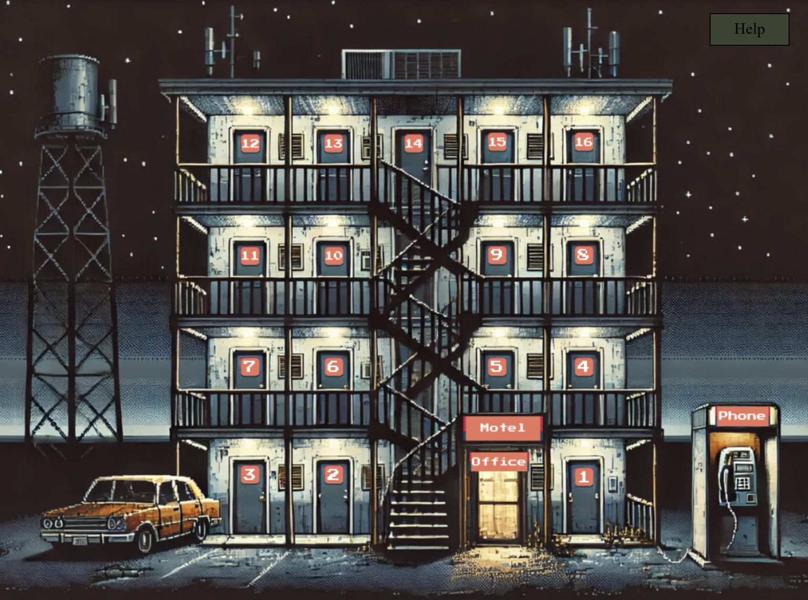
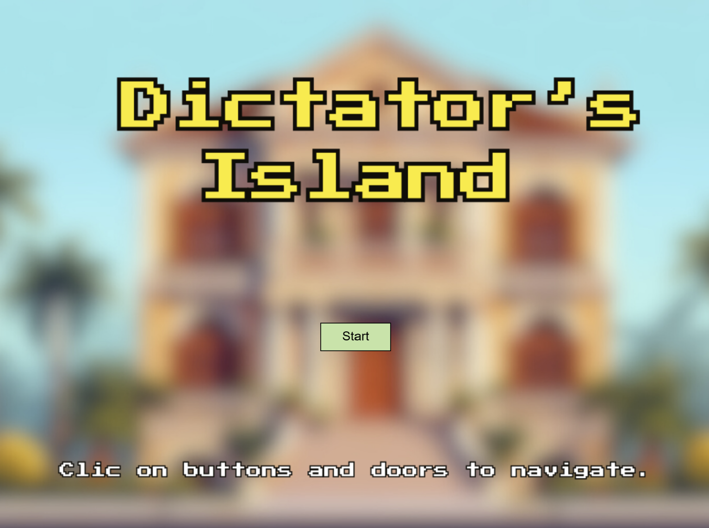
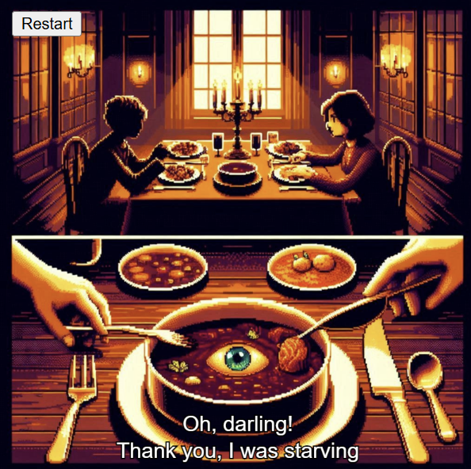

About Me
My name is Mauricio Padilla Quintero. I am a Colombian student living in Toronto, Canada. I have studied social communication, journalism, and marketing, which have helped me develop different skills in the communication field.
My journey has been shaped by my interest in creativity, storytelling, and digital media. I enjoy exploring different ways to communicate ideas, create content, and connect with audiences.
Say Hello!
Enter your name to receive a personalized greeting.
My Skills and Abilities
Through my studies and professional experience, I have developed several skills, including:
- Writing, research, and translation.
- Photography, audio, and video editing.
- Graphic design and creative content production.
- Social media management and digital marketing.
- Communication strategies and performance reporting.
My Professional Experience
Communication and Digital Media
I have experience in internal and external communications, stakeholder management, social media, and data analysis. I also work with content creation, communication strategies, and performance reports to help organizations communicate more effectively.
Creative Coding Projects
Here are a few interactive and creative projects I have made.

Finding Chloe
A creative web project. Select the card to explore it.

Dictator's Island
An interactive project exploring a fictional island.

Where Is Anitta?
Another creative project made for the web.
Contact
Email: mauriciopaqu@gmail.com
You can also find me on Instagram .